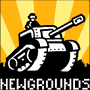

MENU >> Links >> Links to other cool sites! >>Sonic Links - Non-Sonic Links - Link to the Sonic Stadium |
But there are times when you just aren't in the mood for Sonic. One day you may think "I'm not in the mood for Sonic. Let's not go to the Stadium, eh?" Well, it just so happens that even when you're getting bored of Sonic for one day, the Stadium still thinks of you and therefore this page has been built. It is basically a links page, but to other cool links that don't involve Sonic. Go on, these sites have been viewed many times by Dreadknux and would only be here if they are cool enough. Take some time out, try one of the sites below.
... Besides, I do have more than just Sonic on the brain... ^_^
Sonic is cool. That's why I built the Stadium, and that's why you came to the Stadium in the first place. Yes, sonic has been the greatest video game mascot ever, and undoubtedly he still is, Mario just can't compete. Sorry, but it's true!Non-Sonic Links
Other Cool Links!

Amused.comStick Death.comhttp://www.stileproject.com/kungfu.html
This is a direct link to one of the funniest Flash movies I've seen in ages! Stick men in Kung Fu motion! Genius! Whatever you do, just don't go straight to www.stileproject.com - It's a porn site, but this page isn't. Quite weird, but you have been warned!
*If you wanna be linked to the Stadium, just tell Dreadknux!*
dreadknux@knuckles.co.uk
Fill in the form!